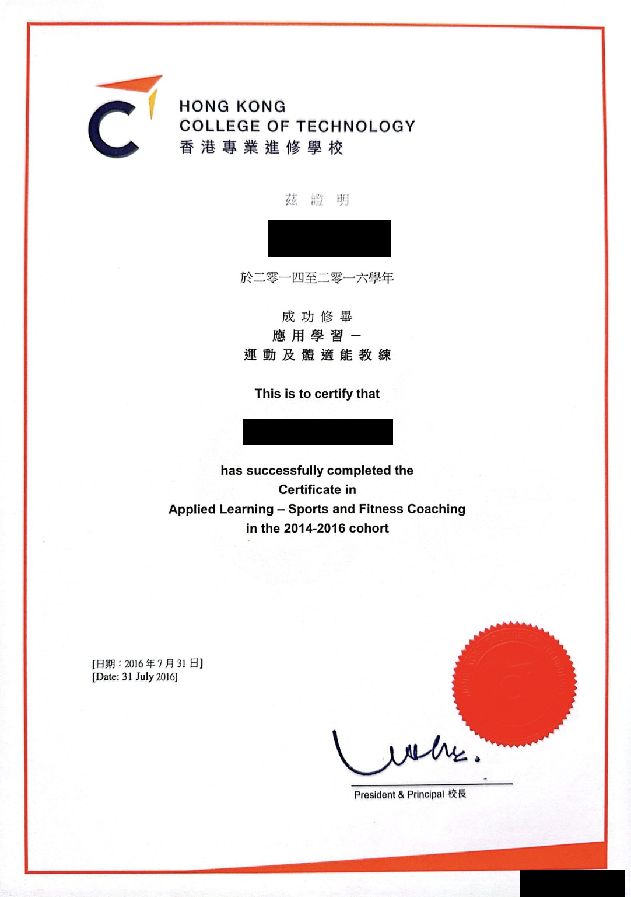
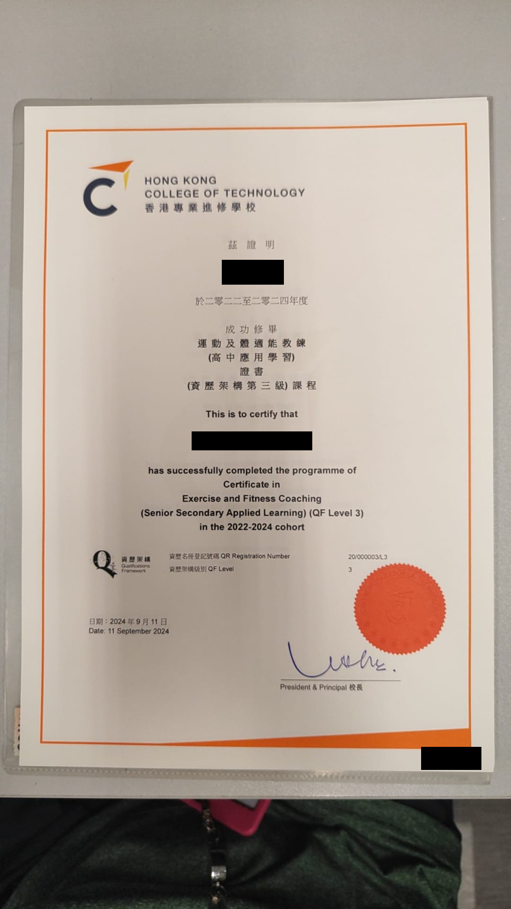

2016 頒發 C01

Sports and Fitness Coaching
教育目的、資歷認可與課程調整
名稱與認可標示，
如何隨課程發展而改變？
2016 頒發 C01

Sports and Fitness Coaching
2024 頒發 C02

Exercise and Fitness Coaching
香港專業進修學校 HKCT
運動科學、體適能與健康、教練法
基礎技能、思考、人際關係與態度
發展興趣，為後續學習做好準備
探索高中多元學習選擇
D45 · 政策背景反映新高中的定位與目標
D35 · §2.19支援 2009/10 起的新高中安排
D01 · 行政安排應用學習置於高中選修制度
D54 · 制度節點新學制的首個考試年度
D54 · 考試年度2015 年立法會文件 · 附錄四（據原表整理）
| 機構／課程 | 2010–12 | 2011–13 | 2012–14 | 2013–15 | 2014–16 | 2015–17 |
|---|---|---|---|---|---|---|
| 教院 HKIEd（SCPE）運動管理與教練法 | ● | ● | ● | — | — | — |
| 浸大 HKBU（SCE）運動科學及體適能 | ● | ● | ● | ● | — | ● |
| 港專 HKCT運動及體適能教練 | — | — | — | — | ● | ● |
● 原表有開辦標記 — 原表該屆沒有標記
毅進課程預期變動
＋財務可持續性考慮
批准新營運策略
完成餘下委託課程的安排
年報記錄已停辦課程
配合學生的興趣及學習需要
定期檢視課程組合，回應持份者期望
連結香港社會及經濟發展
2015職教報告 §2.5及註3
立法會會議 §34、39
2014升中五開始修讀；官方另列2014–16屆164修讀人次。
報告 §6.39
《施政報告》§196
2016預算答覆／2017落實回顧
2014–2016 學年修讀時無須付學費。
2016 年 11 月評審摘要
| 報告封面日期 | 本科評審有效期（依原文分列） | 來源 |
|---|---|---|
| 2016.11 | 2017.01.01 — 2021.12.31 | D41 |
| 2019.11 | 2020.01.01 — 2024.12.31 | D42 |
| 2022.07 | 2025.01.01 — 2027.08.31 | D43 |
| 2025.06 | 2027.09.01 — 2030.08.31 已公布未來安排 | D44 |
政策目的：讓學生在DSE以外取得認可資歷，支援相關深造與就業（D09 §2.6）。
評審、QR登記及頒證日期不同；上表重疊期按原文保留。
Zumba、瑜伽／健體太極拳、功能性訓練
D12 · 頁 68–69適當加入專項技能與教授實習
以配合名稱及學習成效
提交期限：2018.02.28
導師描述保留瑜伽
O02 · 口述轉述文件已經沒有列出瑜伽課程
D15 · 頁 70–71提交修訂課綱、教案及教材
避免學生誤以為畢業後
即成為合資格教練
建議針對中文名；不能當作英文更名原因。
現有材料未包括營辦者回覆；要求及建議不等於已查證的完成紀錄。
中四提早修讀
第四選修科資助
中四或中五開課
2020/21 起擴展資助
中四：2022 年 9 月
中五：2023 年 9 月
通函註 2：中四模式二試點自 2013/14 已存在；2020/21 是較一般安排的落實。
星期六上課
模式一列出多個場地
模式一已只列兩個馬鞍山校園
相關高級文憑、運動學士等課程
體適能、運動活動及康體設施
現行港專頁仍列馬鞍山模式一；首次全部搬遷日期未確認。升學及職業方向不等於錄取或執照保證。
| 文件日期 | 文件／適用版本 | 列出的內容 |
|---|---|---|
| 2024.05 | 港專小冊子 | 瑜伽 · 八部分 |
| 2025.02 | 港專小冊子 | 運動伸展 · 七部分 |
| 2025.04 擬稿 | 教育局 2025–27 課綱 | 瑜伽 · 八部分 |
| 2025.06 | 評審報告（認可期 2027–30） | Stretching Exercises · 七部分 |
| 2025.11 擬稿 | 教育局 2026–28 課綱 | 伸展運動 · 七部分 |
中四新班 → 2026–28年度／2028 DSE
中五新班 → 2025–27年度／2027 DSE
中四及中五新班
2025.10.04 開課
以下呈現調整的內部解釋
配合學校需求
考慮學生對「瑜伽」名稱的接受程度
宗教因素亦在考慮之內
上司認為，大眾未必將瑜伽與其他運動直接連繫
「運動伸展」更突出運動應用
上司以伸展協助運動技能的作用解釋改動
這是其說明及課程定位，並非本研究的成效結論
公開文件另顯示單元結構改變；目前未有改名後的學生接受程度或技能成效評估。
實踐基礎知識
探索升學與職業
QF認可、評審要求
與修讀安排逐步發展
調整課程內容
與運動應用定位
課程持續協調教育目標、認可要求與學校需要。
仍待補：開辦／承接的直接紀錄、正式修訂及過渡通知、長期成效追蹤。
正文及逐字稿共42項。D：公開文件；C：證書；U：使用者資料；O：口述／轉述。
2008-09-26；PDF 1–2，§2–6
2011–12年報；記述2011-12決策；印刷60／PDF62，司庫報告SCPE段落
2012–13年報；印刷61／PDF64，SCPE段落
2014–15年報；印刷61／PDF63，SCPE段落
2015-03-16；附錄四，印刷／PDF14
2015-05；附件印刷1–2／PDF2–3（164人次見印刷2）
2015-07；印刷21／PDF22，§2.5–2.6及註3；印刷87–88／PDF88–89，§6.36–6.39
2016-01-13；第196段
2016–17開支預算；EDB019：第18節EDB-1印刷37–38／PDF60–61；EDB040：印刷107／PDF130，答覆1(d)
2016–18屆概覽；印刷／PDF68–69
2019–21屆概覽；印刷／PDF70–71
2020-01；提交2020-01-23另見D18；印刷34／PDF36，§3.7；印刷40–42／PDF42–44，§3.27–3.33（核讀隨包U07）
2021-10-25；118/2021；PDF2，§6–8及註2
2020-12-09；新聞公報正文及第四項安排
2020年施政報告；印刷52／PDF60，第155段（以原頁影像核對）
2025–27屆；2025-04擬稿；PDF2，課程結構；2025年4月擬稿
2025-02編印；PDF1編印日期、PDF4本科頁
動態網頁；2026-11-16查閱；課程結構、上課地點與模式、資歷架構欄；2026-11-16查閱
2023–25屆概覽；印刷100／PDF102，項目46
2006-08；印刷6–7／PDF20–21，§2.16–2.19；撮要PDF5
2026–28屆；2025-11擬稿；PDF2，課程結構；2025年11月擬稿
封面2016-11；發布2017-01-16見D60；印刷1–4／PDF2–5；封面2016年11月
封面2019-11；現場評審2019-09-25；封面；印刷6–7／PDF7–8；印刷10–11／PDF11–12
封面2022-07；檔名日期2022-10-05；印刷5–6／PDF6–7
封面2025-06；檔名日期2025-07-18；印刷3–4／PDF4–5；印刷16–17／PDF17–18
2003-03-18；2003-03-18新聞公報正文
2024-05編印；PDF7本科結構
2009-07-03；2009-07-03新聞公報正文
2020-09；印刷27–28／PDF34–35，§3.7.1–3.7.3
2017-11，CB(4)134/17-18(02)；印刷／PDF4，§15–16
通函48/2025；2026–28年度／2028 DSE；PDF1–3，§6–10；尤其p2模式一／二、p3§10
通函95/2024；2025–27年度／2027 DSE；PDF2–3，§6–10
2025-06-30更新；2025/26中四模式一；PDF1及16；674的TA、TB班
2025-05-28更新；2025/26中五模式一；PDF1、29–30；674的SA–SF班
會議日期2015-03-16；印刷／PDF11–13頁，第34、39、41段；第34段跨11–12頁
頁面未明示發布日期；內文談及2018年成績及當時新辦學士課程；正文陳卓禧解釋獎學金及運動學士課程的段落；完整閱讀正文
2016-07-31頒發；證書課程名、屆別、日期欄
2024-09-11頒發；證書課程名、屆別、日期、QF及QR欄
2014–2016；交接包02_RESEARCH，第8節；口述整理，無正式逐字稿〔交接口述〕
描述2017年9月新一屆；交接包02_RESEARCH，第8節；口述整理，無正式逐字稿〔交接口述〕
授課經驗：2025-09；使用者補充確認：2026-11-16；交接包02_RESEARCH第8節；2026-11-16本對話兩次書面回覆〔本人補充〕
2026-11-17本對話補充；所述為2025新班調整；本對話：學校／市場需要、學生接受程度、宗教考慮、名稱與運動應用定位〔上司經本人轉述〕
補充核證12項、延伸研究報告4項、時間線參考23項。待核、推測及轉述按各自證據範圍使用。
2025考試年度；PDF1，Assessment Scheme，Task 4
2025-09-25；書面答覆（一）至（三）、（四），與議員提問分開
2022-09-07更新；2022–24屆；印刷／PDF32，674欄
動態頁面；2026-11-16查閱；「質素保證」、「成績匯報」及「資歷認可」三節
2009；2017-11更新；印刷34–36／PDF39–41，§5.4–5.6及附錄一
2027–29年度；2026-11-16取得；印刷92–93／PDF94–95，本科第42項、代碼674
2026–27開支預算答覆；EDB154；第14節EDB印刷453–454／PDF461–462
2025-05-08簡介；2026–28年度；PDF1、3–5、20
2016 DSE統計第7節；表7e印刷114／PDF13（日校）；表7f印刷120／PDF19（全體）
2026–28年度概覽；2026-11-16取得；印刷98–99／PDF100–101，本科第45項
2025–27年度概覽；2026-11-16取得；印刷92–93／PDF94–95，本科第42項
2023年議案跟進報告；PDF5，§16–19
黎萬紅、鍾宇平、孔繁盛；香港中文大學教育學院／香港教育研究所。1999；封面及版權頁（PDF1–2）；摘要印刷1／PDF5；方向討論印刷20、23／PDF24、27
香港青年協會青年研究中心／青年創研庫。2015.07；版權頁PDF2；研究摘要i–v／PDF5–9；應用學習印刷12–14／PDF24–26；參考文獻46／PDF58
香港教育大學研究團隊；智經研究中心委託。2017.08；封面PDF1；行政摘要i–iv／PDF2–5；印刷13–14、19、51–52／PDF26–27、32、64–65
羅兵咸永道諮詢服務有限公司（PwC）；職業訓練局（VTC）委託。2021.06；電子版2021.09.14修訂；PDF／印刷4–5、14–15、26–27、70、72、252、440
2014年施政報告；第101–108段〔相關頁待核〕
2015-06-29；新聞公報；搜尋應用學習及等級〔相關頁待核〕
現行動態FAQ；制度自2018DSE；成績匯報／Attained with Distinction (I)/(II)項〔相關頁待核〕
2020-07-03；第3段〔相關頁待核〕
2020-09-01；新聞公報全文〔相關頁待核〕
2024–26屆；2024-06擬稿；PDF2，課程結構；2024年6月擬稿
2021-06-16；立法會十一題政府答覆〔相關頁待核〕
動態官方專責小組介紹；2014及2018專責小組／2015及2020報告段〔相關頁待核〕
2006-08-08；政府新聞公報全文〔相關頁待核〕
2026-04-08；49/2026；通函及附件課程名單；本科逐項尚待核〔相關頁待核〕
2017-10施政報告；第125段〔相關頁待核〕
2022年施政報告；第122(v)段〔相關頁待核〕
2022DSE統計第7節；印刷／PDF42名稱對照；50頁2016全體考生；35頁日校數不同〔相關頁待核〕
2020-09-22；新聞公報全文〔相關頁待核〕
2021年施政報告；印刷47／PDF55，第142段〔相關頁待核〕
動態網頁；記述2021-04優化；優化高中課程措施及善用釋出課時段〔相關頁待核〕
2021年施政報告；第142段〔相關頁待核〕
2017-01-16發布索引；搜尋日期2017-01-16及Sports and Fitness Coaching／Public Relations〔相關頁待核〕
2024-07-05更新；2024/25中四模式一；PDF1及13；674的SK班
版本以原件為準；交接包07_UPLOADS索引；精確引用頁碼待核〔按原檔名，書目待核〕
版本以原件為準；交接包07_UPLOADS索引；精確引用頁碼待核〔按原檔名，書目待核〕
版本以原件為準；交接包07_UPLOADS索引；精確引用頁碼待核〔按原檔名，書目待核〕
2017年；交接包02_RESEARCH，第8節；口述整理，無正式逐字稿〔推測，非事實證據〕